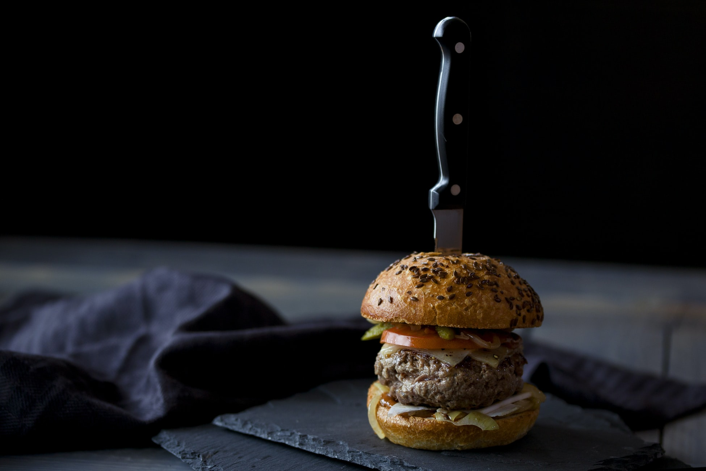

FOODIE KNOWLEDGE ...

Savory dish of Italian 'PIZZA'

A fast-food of Germany or United States 'BURGER'
Special nepali dish 'MOMO'
PIZZA
Pizza (Italian: [ˈpittsa], Neapolitan: [ˈpittsə]) is a savory dish of Italian origin consisting of a usually round, flattened base of leavened wheat-based dough topped with tomatoes, cheese, and often various other ingredients (such as anchovies, mushrooms, onions, olives, pineapple, meat, etc.) which is then baked at a high temperature, traditionally in a wood-fired oven. A small pizza is sometimes called a pizzetta. In Italy, pizza served in formal settings, such as at a restaurant, is presented unsliced, and is eaten with the use of a knife and fork.In casual settings, however, it is cut into wedges to be eaten while held in the hand. The term pizza was first recorded in the 10th century in a Latin manuscript from the Southern Italian town of Gaeta in Lazio, on the border with Campania. Modern pizza was invented in Naples, and the dish and its variants have since become popular in many countries.It has become one of the most popular foods in the world and a common fast food item in Europe and North America, available at pizzerias (restaurants specializing in pizza), restaurants offering Mediterranean cuisine, and via pizza delivery.Many companies sell ready-baked frozen pizzas to be reheated in an ordinary home oven.
BURGER
A hamburger (also burger for short) is a sandwich consisting of one or more cooked patties of ground meat, usually beef, placed inside a sliced bread roll or bun. The patty may be pan fried, grilled, smoked or flame broiled. Hamburgers are often served with cheese, lettuce, tomato, onion, pickles, bacon, or chiles; condiments such as ketchup, mustard, mayonnaise, relish, or "special sauce"; and are frequently placed on sesame seed buns. A hamburger topped with cheese is called a cheeseburger. The term "burger" can also be applied to the meat patty on its own, especially in the United Kingdom, where the term "patty" is rarely used, or the term can even refer simply to ground beef. Since the term hamburger usually implies beef, for clarity "burger" may be prefixed with the type of meat or meat substitute used, as in beef burger, turkey burger, bison burger, or veggie burger. Hamburgers are sold at fast-food restaurants, diners, and specialty and high-end restaurants (where burgers may sell for several times the cost of a fast-food burger, but may be one of the cheaper options on the menu). There are many international and regional variations of the hamburger.
MOMO
Momo is a type of East and South Asian steamed filled dumpling, popular across the Indian subcontinent and the Himalayan regions of East-South Asia border. Momos are native to Southwest Chinese region of Tibet, Bhutan, Nepal, North Indian region of Ladakh, Northeast Indian regions of Sikkim, Assam, and Arunachal Pradesh, and East Indian region of Darjeeling. It is similar to Chinese baozi, jiaozi, and mantou, Mongolian buuz, Japanese gyoza, Korean mandu and Turkic manti, but heavily influenced by cuisine of the Indian subcontinent with Indian spices and herbs. Momos are extremely popular among the natives of the Indian subcontinent, and can be found in every kind of shop from restaurants to street vendors. In Shanxi, where Jin Chinese is spoken, unfilled buns are often called momo (饃饃), which is simply the character for "steamed bun". The name momo spread to Tibet, India and Nepal and usually now refers to filled buns or dumplings. Momo is the colloquial form of the Tibetan word "mog mog". The different names for the dumpling include Assamese: মম; Bengali: মোমো; Nepali: मम; Nepal Bhasa: ममचा, मम:; Tibetan: མོག་མོག་, Wylie: mog mog; simplified Chinese: 馍馍; traditional Chinese: 饃饃; pinyin: mómo.